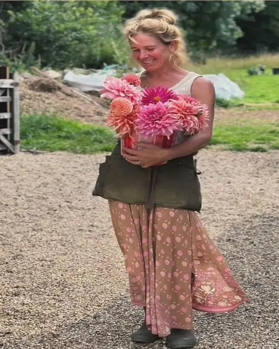
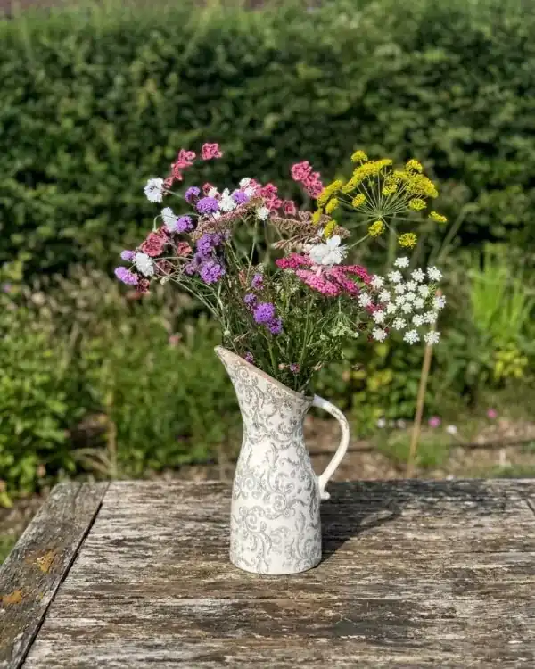
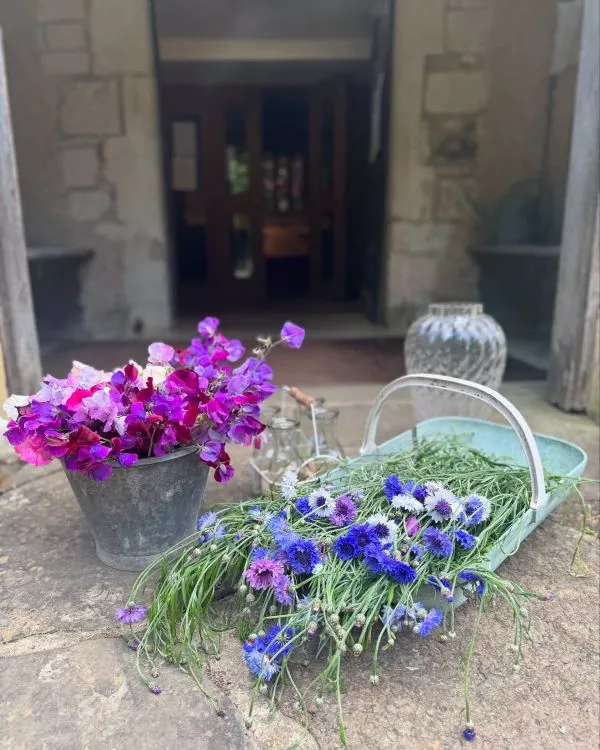
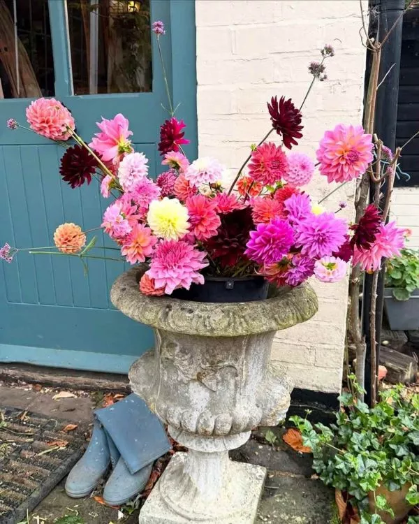
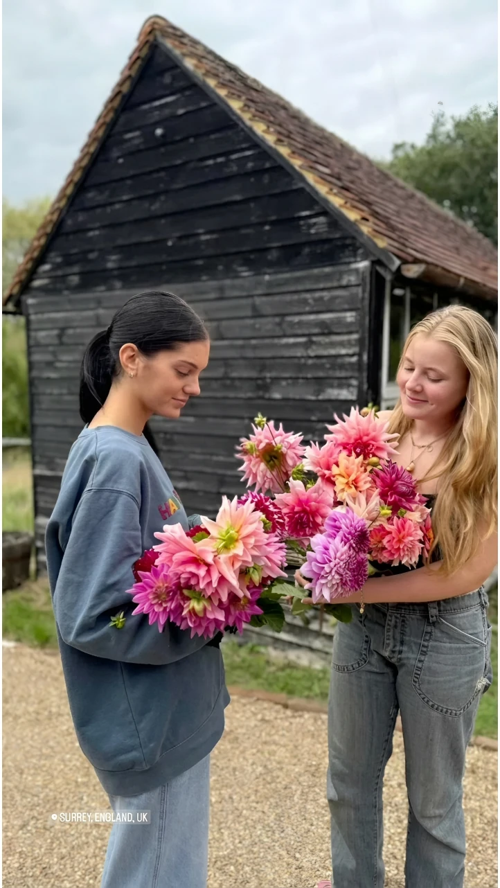
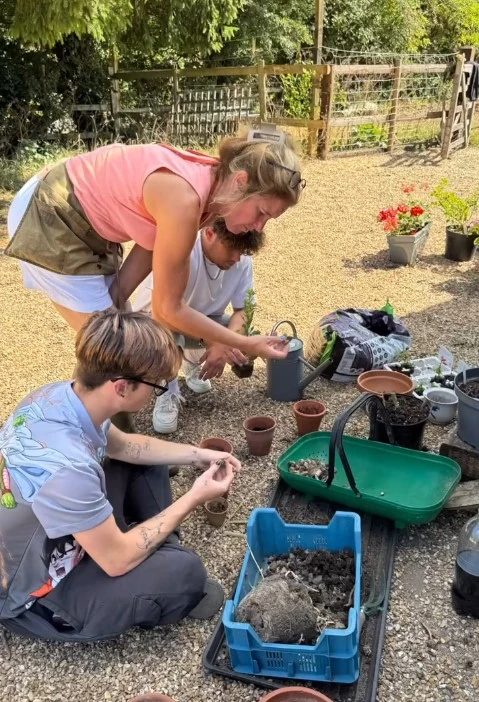

Organic Flower Farm
& Dahlia Specialist
in West Sussex
We grow premium British flowers on our boutique social enterprise farm in West Sussex. Harvesting each stem with patience, we blend organic dahlia cultivation with community ecotherapy, delivering fresh, sustainable blooms near Loxwood.

The Art of Nurturing Extraordinary Dahlias
Froggetts Flower Farm is a dedicated West Sussex sanctuary for British-grown dahlias, born from Clare's deep passion for these spectacular blooms.
From carefully conditioning rare varieties to cultivating the earth with sustainable, peat-free methods, we pour both heart and science into every single tuber we grow.
Discover Our Story
Limited HarvestThe Meadow Pitcher
Delicate Seasonal Mix

Summer SpecialSweet Pea Harvest
Freshly Gathered Stems

The Signature Dahlia Urn
Estate Grown Dahlias

Pick Your Own & Tea Afternoons
Wander through our vibrant dahlia beds and compose your own unique, freshly cut bouquet. After harvesting, relax in our scenic garden with a delightful blend of artisanal teas and homemade cakes, baked fresh right here on the farm.
Book an AfternoonLearning & Growing Together
Froggetts Flower Farm is rooted in community and sharing the joy of nature. Join us on the farm to learn seasonal floristry crafts or take part in our dedicated educational and volunteering programmes.
- Dahlia & Creative Workshops: From summer Dahlia Masterclasses and bouquet conditioning to festive winter wreath making.
- School Visits: Engaging, nature-focused educational days exploring biodiversity and British flowers.
- DofE Volunteering: Empowering local youth through official Duke of Edinburgh Award volunteering opportunities.

Community Flower Club & Volunteering
Support sustainable local farming and enjoy a weekly curated basket of our freshest seasonal stems. We are also a proud host to Duke of Edinburgh students and local volunteers, creating a space where generations connect and learn organic farming first-hand.
Join Our Club